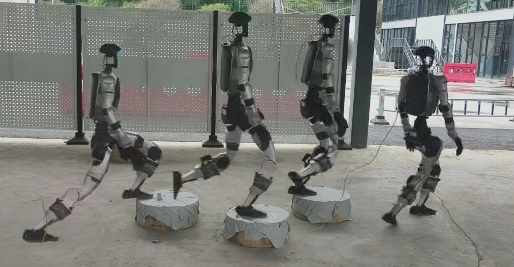
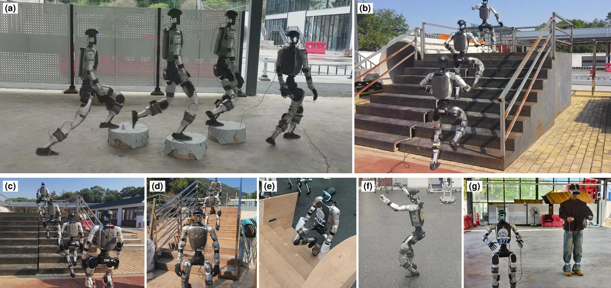
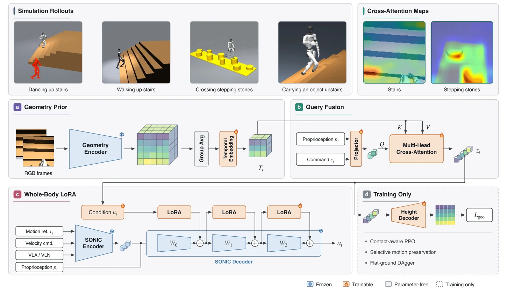
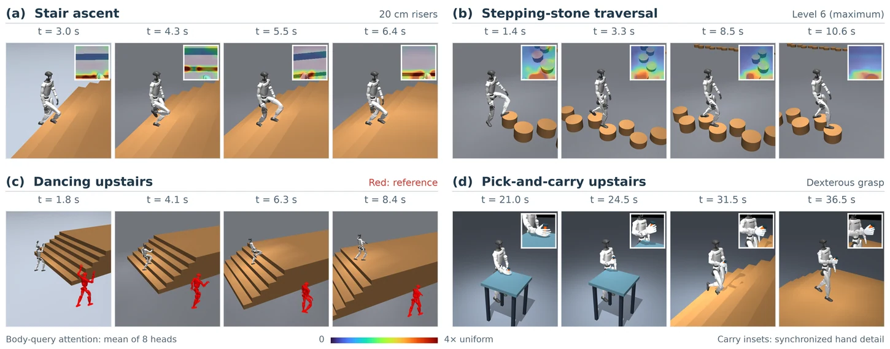
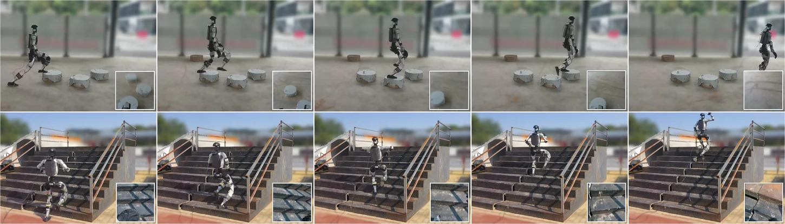
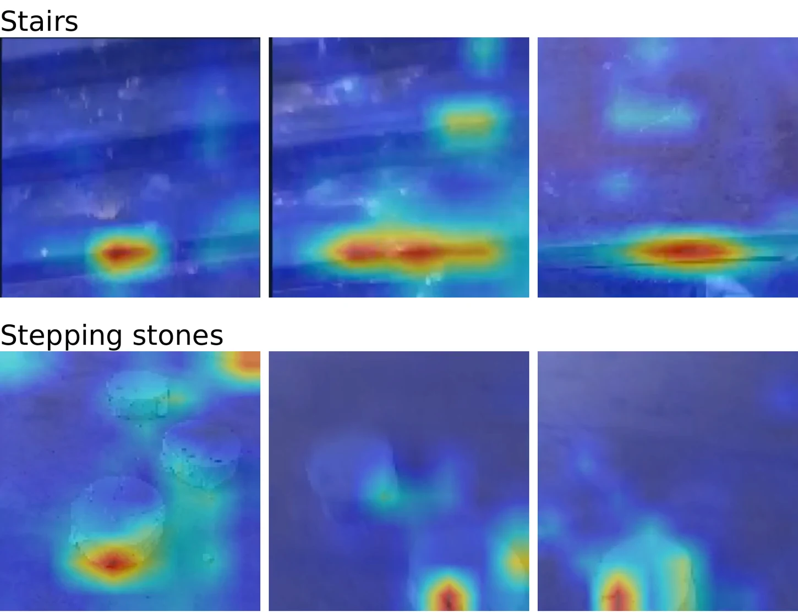

Overview
A planner can tell a humanoid where to go. A camera shows where its feet can land.
GeoBFM gives a pretrained whole-body motion tracker access to local support geometry through monocular RGB. The robot uses this information to adjust its foot placement while continuing to follow a velocity command, a motion reference or an upper-body target.

Method
From camera pixels to contact-aware motion.
Frozen Depth Anything V2 encodes two RGB frames. Proprioception and task commands query the resulting patch tokens. Low-rank adapters use this shared representation to modulate the frozen SONIC tracker. During PPO training, an auxiliary head predicts 99 local terrain heights from the same representation.


Simulation
Four tasks, from stair ascent to carrying a bottle upstairs.

On hardware
Stairs and stepping stones through the robot's own camera.




Results
On regular stairs, both adapted policies finish the course. Their contact quality differs.
Each controller faces the same 120 simulated trials per direction, with six-step staircases, 5–25 cm risers and 35 cm treads. ViBe-M is the task-matched visual baseline.
Stair traversal
| Controller | Ascent (%) | Descent (%) | |||
|---|---|---|---|---|---|
| Strict pass ↑ | Riser hit ↓ | Foot overhang ↓ | Stable pass ↑ | Riser hit ↓ | |
| SONIC (released) | 0.0 | 100.0 | 15.0 | 9.2 | 95.8 |
| ViBe (released) | 0.0 | 100.0 | 48.3 | 1.7 | 83.3 |
| ViBe-M | 46.7 | 30.8 | 32.5 | 64.2 | 90.8 |
| GeoBFM | 90.0 | 0.8 | 1.7 | 80.0 | 80.8 |
Strict ascent requires completion without a qualifying foot–riser hit, foot–foot or shin contact, sustained overhang or heading deviation. Stable descent scores riser hits separately. Of GeoBFM's 96 stable descents, 75 include a foot–riser hit.
Stair ascent ablations
| Variant | Strict pass (%) | Riser hit (%) | Foot overhang (%) |
|---|---|---|---|
| GeoBFM | 90.0 | 0.8 | 1.7 |
| Without geometry loss | 80.0 | 2.5 | 11.7 |
| Current frame only | 73.3 | 9.2 | 7.5 |
| Blind adaptation | 0.0 | 100.0 | 24.2 |
| Fixed queries | 84.2 | 5.0 | 2.5 |
| Black RGB at test time | 0.0 | 100.0 | 59.2 |